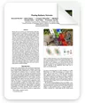

Floating primitives
Planar generalized Gaussians provide explicit, hardware-compatible geometry.

Read paperFloating Radiance Networks
Explicit ray-traceable geometry with continuous local neural radiance.
A complete walkthrough of FlaRe, from its local neural radiance representation to ray tracing and geometry manipulation.
Abstract
Recent neural scene representations enable photorealistic novel-view synthesis, but most remain tightly coupled to a single rendering paradigm. Floating Radiance Networks (FlaRe) combine explicit ray-traceable geometry with continuous neural radiance functions.
A scene is represented by floating planar generalized Gaussian primitives. Each primitive carries a compact descriptor of a local radiance field, while one lightweight decoder maps the descriptor, local surface coordinates, and viewing direction to color and opacity.
This explicit structure enables interactive rendering and recursive ray tracing—alongside deformation, mesh extraction, stylization, and compact scene modeling.
Method
FlaRe keeps the flexibility of a neural field while making every scene element directly queryable and editable.
Planar generalized Gaussians provide explicit, hardware-compatible geometry.
Every hit produces local coordinates and a viewing direction.
A compact network decodes continuous color and opacity at the intersection.
Capabilities
Six focused, looping demonstrations. Each one operates directly on the same learned FlaRe scene.
Geometry editing
Primitive-level deformation transfers edits from proxy geometry back to the learned scene without retraining.
Hybrid ray tracing
Conventional mesh objects integrate seamlessly with the neural scene, including environment reflections and secondary rays.
Appearance editing
Secondary rays query the modified descriptor space directly. No separate ray-tracing representation is needed.
Material response
Material-dependent reflection and refraction demonstrate recursive ray queries through both neural primitives and mesh geometry.
Mesh extraction
A single Garden trajectory reveals the learned descriptor field, depth, surface normals, and finally the extracted geometry—first as a gray mesh, then with color.
Results
High-quality novel-view synthesis in an explicitly ray-queryable scene representation.
Selected results on Mip-NeRF 360. See the paper for complete comparisons on Mip-NeRF 360, Tanks and Temples, and Deep Blending.
Citation
@article{byrski2026flare,
title = {FlaRe: Floating Radiance Networks},
author = {Byrski, Krzysztof and Tobiasz, Rafał and Wilczyński, Grzegorz and
Zieliński, Mikołaj and Baran, Dawid and Belter, Dominik and
Tabor, Jacek and Spurek, Przemysław},
journal = {arXiv preprint arXiv:2608.05920},
year = {2026}
}